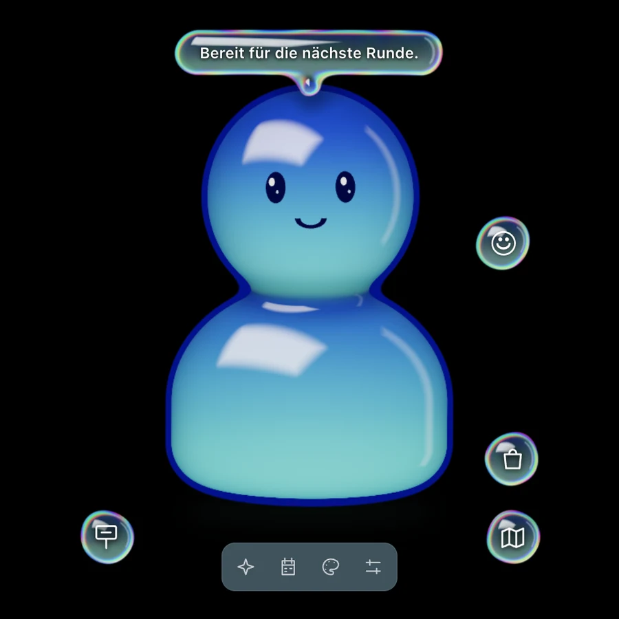

Auf deinem Desktop
Jelly sitzt ohne Fenster auf deinem Desktop, neben dem Spiel. Bedient wird es direkt am Jelly.
- Jelly sagt Bescheid Zehn Minuten vor jedem Programmpunkt, bei einem neuen Level und wenn dich jemand zu einem Partner-Emote auffordert.
- Tropfen öffnen Emotes, Schild, Shop und Karte hängen als Tropfen am Jelly.
- XP melden Im Dock trägst du Essen, Getränke und Events ein. Dort findest du auch Zeitplan, Aussehen und Einstellungen.